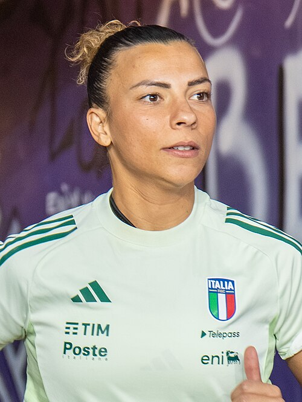

Ezzcoins › Player pages › Arianna Caruso

83
CM

Caruso
PAC74
SHO80
PAS82
DRI87
DEF71
PHY72
PlayStyles
Incisive PassTechnicalFirst TouchRelentlessArianna Caruso
83 CM · Real Madrid · Liga F ·  Italy
Italy
800Recent console price
84Meta rating · CM +1 vs overall
CM84CAM83CDM81
PAC74
SHO80
PAS82
DRI87
DEF71
PHY72
Chemistry style
Turn on JavaScript to see this card with each chemistry style.
- Position
- CM (also CDM, CAM)
- Club
- Real Madrid
- League
- Liga F
- Nation
- Italy
- Skill moves
- 4★
- Weak foot
- 3★
- Preferred foot
- Right
- Height
- 165 cm
- Age
- 26
- Football
- Women's football
Meta rating: Ezzcoins' own estimate of how well this card plays in game, worked out from its stats for each position it can play, its skill moves, weak foot and PlayStyle+. An average card scores about its overall rating; higher means it plays above its rating.
Watch on EzzcoinsMore from Real Madrid
- 91
 Kylian MbappéST
Kylian MbappéST - 90
 Jude BellinghamCAM
Jude BellinghamCAM - 90
 Thibaut CourtoisGK
Thibaut CourtoisGK - 89
 Vini Jr.LW
Vini Jr.LW - 87
 Federico ValverdeCM
Federico ValverdeCM - 86
 CucurellaLB
CucurellaLB - 85
 Linda CaicedoLW
Linda CaicedoLW - 84AtheneaRW